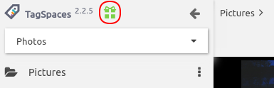

Installation and Setup
Installing Windows version
The Windows version of TagSpaces is distributed as zip file, which can be downloaded for 64bit versions of Windows, depending on your system. Then you have to just unzip the downloaded file in a folder of your choice somewhere on your system. In the unpacked folder you will find a file called tagspaces.exe, which can be executed with double click.
Updating the Windows version
Just exchange the content of your current installation, with the content from the zip-file of a newer release. You don't have to worry about your tag library and locations since they are persisted in the users home folder.
Installing macOS version
For macOS 10.10 or later you have to download the 64bit of the application. Then you have to double click the downloaded zip file in Finder to unpack it properly. Some users are reporting issues with unpacking the app with some 3th-party zip utils.
Note: By default macOS does not allow TagSpaces to be executed with a simple double click, because it is currently not digitally signed. To work around this, right-click the TagSpaces.app folder and choose Open, then click Open on the dialog that appears. You need to do this just once.
Updating the macOS version
Just exchange the content of your current installation, with the content from the zip-file of a newer release. You don't have to worry about your tag library and locations since they are persisted in the users home folder.
Installing Linux version
The Linux version of TagSpaces is distributed as tar.gz file, which can be downloaded for 64bit Linux versions, depending on your system. Then you have to just unpack the downloaded file in a folder of your choice somewhere on your system. In the unpacked folder you will find a file called tagspaces, which can be executed with double click or in a terminal. We also offer 64bit deb package for Debian/Ubuntu based distributions.
Updating the Linux version
Just exchange the content of your current installation, with the content from the tar.gz-file of a newer release. You don't have to worry about your tag library and locations since they are persisted in the users home folder.
Installing Android version
You can install the Android app directly from the Google Play Store.
Updating the Android app
Once we publish a newer version of the Android app, it will be automatically installed on your mobile device within the following days.
Installing the Firefox Addon
Download the Add-on for Firefox. Open the Add-on tab in Firefox from the main menu and then click on the Add-on puzzle icon, or simply type ctrl+shift+a or command+shift+a. In the opened new tab, go to the settings dropdown on the left of the search field and select Install Add-on From File.... Then choose the downloaded file and follow the instructions.
You can also find TagSpaces in the Mozilla's addon store, but consider that the version there could be some months old due to their slow approval process.
Once installed the add-on can be started from the TagSpaces icon in the right upped corner of the browser or from the browser's main menu Tools > TagSpaces.
Updating the Firefox addon
Once a newer version of the Firefox addon is approved for the Mozilla store, it will be automatically installed on your Firefox browser within the following days.
Installing the Chrome Extension
You can install the Chrome extension directly from the Google Chrome Store.
Installation from the TagSpaces webpage
An alternative way is get the extension directly from our download page. If you do so, please consider the following instructions:
- Download the extension file from the link above and save it to your computer.
- Click the settings icon on the browser toolbar.
- Select Tools > Extensions.
- Locate the extension file on your computer and drag the file onto the Extensions page.
- Review the list of permissions in the dialog that appears and click Install.
After the installation, the TagSpaces extension can be started from the TagSpaces icon in the right upper corner of the browser.
Updating the Chrome extension
Once we publish a newer version of the Chrome extensions on the Chrome store, it will be automatically installed on your Chrome browser within the following days.
Installing TagSpaces PRO
For Windows we are providing installers for TagSpaces PRO, which are signed with modern software certificates. The following screenshot show this certificate in action during the installation under Windows.

Here are the steps needed for installing the PRO version on your system.
- Save the installer file to a location on your hard drive.
- Locate the installer and double-click to start the install process.
- The Windows installer allows you to specify a custom install location.
Updating the PRO version
Just run the installer from a newer version of TagSpaces. It will automatically update your installation.
New version notification
Once a new version of the application is available, you will see a green present icon near the TagSpaces logo. Clicking on this icon will lead your to the what's new webpage on the TagSpaces website. Here you can download the new version of the application.

If you do not want to TagSpaces to check for the availability of new version, disable this functionality in the settings
Running TagSpaces in portable mode
The Windows and Linux versions of TagSpaces can be started in the so called portable mode, allowing the use of the application from an USB-stick or other portable devices. In this mode all the configuration information such as tags, tag groups and connection to locations is stored in a folder called tsprofile. This folder is located in the from where the application is started and not in the home user folder on current operating systems. The portable mode can be started with the tagspacesp.cmd script under Windows or the tagspacesp under Linux. These scripts are located in the unzipped application folder. Under Linux you have eventually to make this script executable with this command chmod +x tagspacesp.
Updating the portable version
In order to update a version of TagSpaces used in portable mode for example on USB stick you have just to exchange the files and directories with the new ones, coming from the installation package of the new application version. As mentioned before in the portable mode, the tag library and locations are stored in the tsprofile folder. So to upgrade to a newer version of tagspaces, we have to take special care for this folder, please follow these steps for the upgrade:
- Rename your existing tagspaces folder to e.g. tagspaces_old
- Extract the downloaded tagspaces zip-file, this will create a new tagspaces folder.
- Copy/move the tsprofile folder from the tagspaces_old folder to the newly created tagspaces folder.
Important: So once again be careful not to delete the
tsprofilesub folder, it contains valuable information for your portable TagSpaces instance.